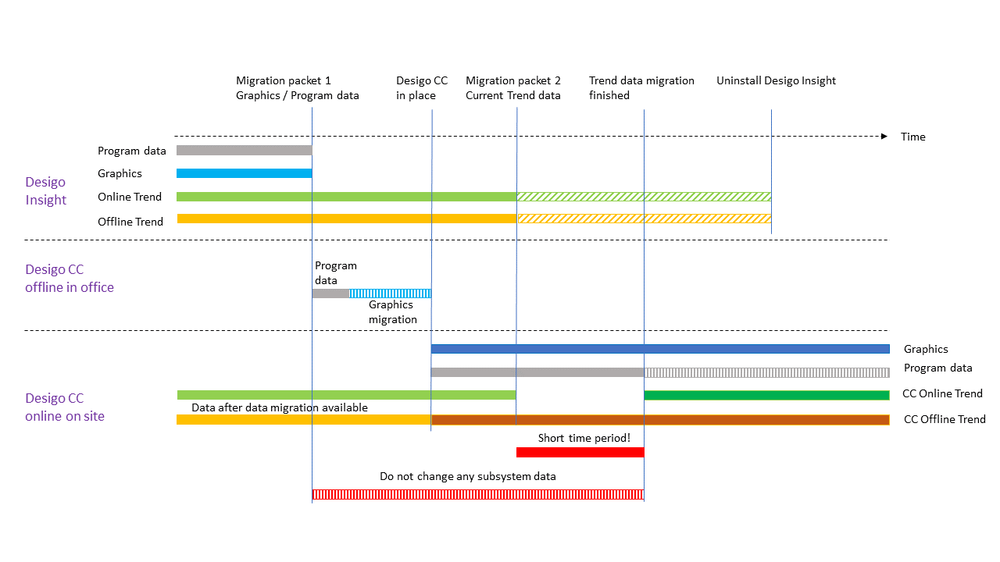

Recommended Timeline for the Migration Workflow
You should draft a migration concept on larger projects after determining the cost of migration using the Sales and migration notes. Note that the time from drafting the migration package and trend data migration is short.

Migration Workflow Timeline | |
| Description |
1. | At the customer, draft a migration package 1 with application data and graphics . The online and offline trend data (not needed at this time) are still saved in Desigo Insight. Avoid changes to the application data until the trend data migration is completed. |
2. | In the office, draft a Desigo CC project and import the application data from migration package 1. |
3. | Migrate existing Desigo Insight graphics from migration package 1 to Desigo CC graphics . |
4. | In the office, draft a Desigo CC project backup. |
5. | Restore the Desigo CC project backup on the plant. Offline trend data is loaded to the Desigo CC database as soon as the online network is connected. This prevents a loss of offline trend data . NOTE: The offline trend log object buffer could become full if only one migration package is created and the time to trend data migration is long. A loss of offline trend data is likely in this case. |
6. | Check the migrated Desigo CC graphics pages . |
7. | Create migration package 2 with trend views and trend data . Migration package 2 includes the most current online trend data as well as overlapping (time) offline trend data that was already loaded on Desigo CC. |
8. | Start with the trend data migration. Migration package 2 should be made as soon as possible to avoid any loss of online trend data . NOTE: Data trending must be selected in the Configurator tab (Value Log property) if online trend data is still recorded. Changes to applications can once again be made after completing migration. |
9. | Desigo Insight can be uninstalled once trend data migration is completed. The trend data recorded as of migration package 2 is lost, or was already migrated to Desigo CC. |